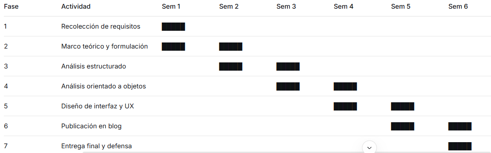

Planificación del Proyecto
Cronograma de Actividades
El proyecto se desarrolla en 6 fases principales desde octubre hasta diciembre 2025, aplicando metodología iterativa e incremental.
Diagrama de Gantt

Fechas Importantes
- 15/10/2025: Inicio del proyecto - Levantamiento de requisitos
- 23/10/2025: Finalización de análisis estructurado y orientado a objetos
- 03/11/2025: Límite para creación del blog/sitio web
- 27/11/2025: Diseño de interfaz y experiencia de usuario
- 05/12/2025: Publicación final en blog
- 10/12/2025: Entrega final impresa y defensa del proyecto
Entregables por Iteración
Iteración 1 (Octubre): Marco teórico, requisitos, planificación
Iteración 2 (Noviembre): Análisis estructurado (modelo ambiental y comportamiento)
Iteración 3 (Noviembre): Análisis orientado a objetos (diagrama UML)
Iteración 4 (Diciembre): Diseño de interfaz, publicación blog, entrega final
Recursos y Herramientas
- Modelado Estructurado: Drawio.com
- Modelado UML: Drawio.com
- Desarrollo Web: HTML5, CSS3, JavaScript
- Hosting: Blog público (GitHub Pages)
- Gestión de Proyecto: Diagramas de Gantt.